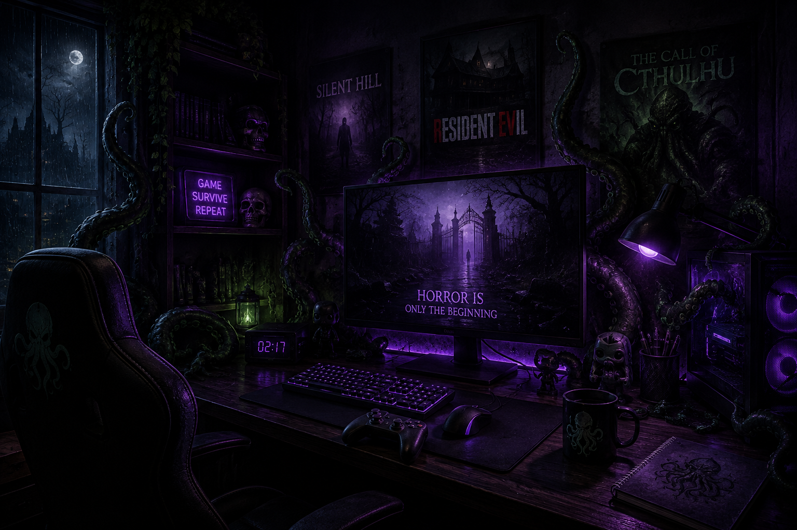

About The Midnight Controller
The Midnight Controller was created for players who enjoy exploring the darker side of gaming. Horror games have evolved from early survival experiences into a diverse genre filled with psychological mysteries, supernatural threats, cosmic horrors, and unforgettable stories. This site celebrates those experiences while helping players discover horror games from across different generations.

What We Explore
- Survival Horror
- Psychological Horror
- Cosmic Horror
- Action Horror
- Indie Horror
Our Approach to Horror
The best horror games do more than simply frighten the player. Atmosphere, sound, storytelling, isolation, and uncertainty can transform an ordinary environment into something deeply unsettling. The Midnight Controller explores how developers use these elements to create experiences that remain memorable even after the controller is put down.